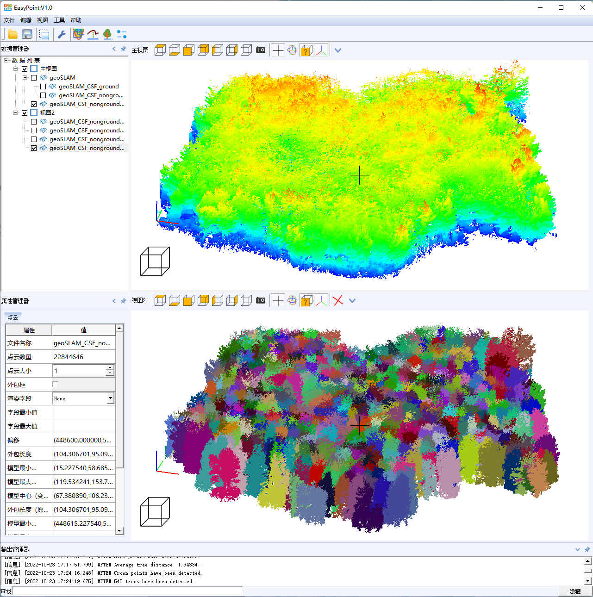

易点是什么
易点是一款点云处理软件，顾名思义，易点的宗旨就是让点云使用容易点，非专业人士也能轻易上手，同时给专业人士更大的自由度和灵活性。
易点的特点

化繁为简
EasyPoint尽最大可能做到没有多到眼花缭乱的菜单和工具条，没有无数的算法让你选择，没有无数的参数让你设置。尽量做到自动化，尽量减少参数。必须人为设置的参数，做到含义清晰，易于设置。

快速准确
EayPoint森林样地点云处理功能参数很少且易于设置，整个处理过程全自动化。可实现单木分割、树干提取、参数提取（单木位置、树高、胸径、冠幅等）等；地面滤波模块参数极少、速度极快，精度较高。

扩展性强
EasyPoint可通过插件方式增加新功能，无需重新编译整个软件。EasyPoint亦支持Python接口，用户可通过Python脚本调用，以方便进行批处理，或者将EasyPoint处理步骤整合到自己的处理流程中。
易点的功能
地面滤波
地面滤波目的是区分地面和地物，其结果直接影响后续点云分割分类等处理的精度和效率，是点云处理中基础且关键的步骤。易点地面滤波参数极少、速度极快，精度较高。
森林样地
易点森林样地点云处理功能参数很少且易于设置，整个处理过程全自动化。可实现单木分割、树干提取、参数提取（单木位置、树高、胸径、冠幅等）等，并以可视化和表格方式呈现结果。
Python接口
易点支持Python接口，用户可通过编程调用和扩展软件功能。
易点的奥秘
现有点云处理软件曲高和寡，专业人士操作可以得到较好的结果，非专业人士很难操作或者得不到理想的结果。
参数难以设置
原因之一在于实现这些软件功能背后的算法需要较多参数，专业人士才能理解参数的意义，并且能够设置合适的参数值。
通用鲁棒性差
原因之二则是参数通用性差且非常敏感。以地面滤波为例，在城区可以得到较好效果的参数，应用于林区可能结果非常差；或者参数值微小的改变就会导致滤波结果有天壤之别。
易点解决之道
所以有些软件看起来处理结果非常好，但用户亲自使用却非常困难，结果也很差。易点的秘密正在于此，开发创新性算法，不仅参数少易于设置，而且参数的通用性和鲁棒性强；从用户的角度出发，将困难留给自己，让用户易于使用。